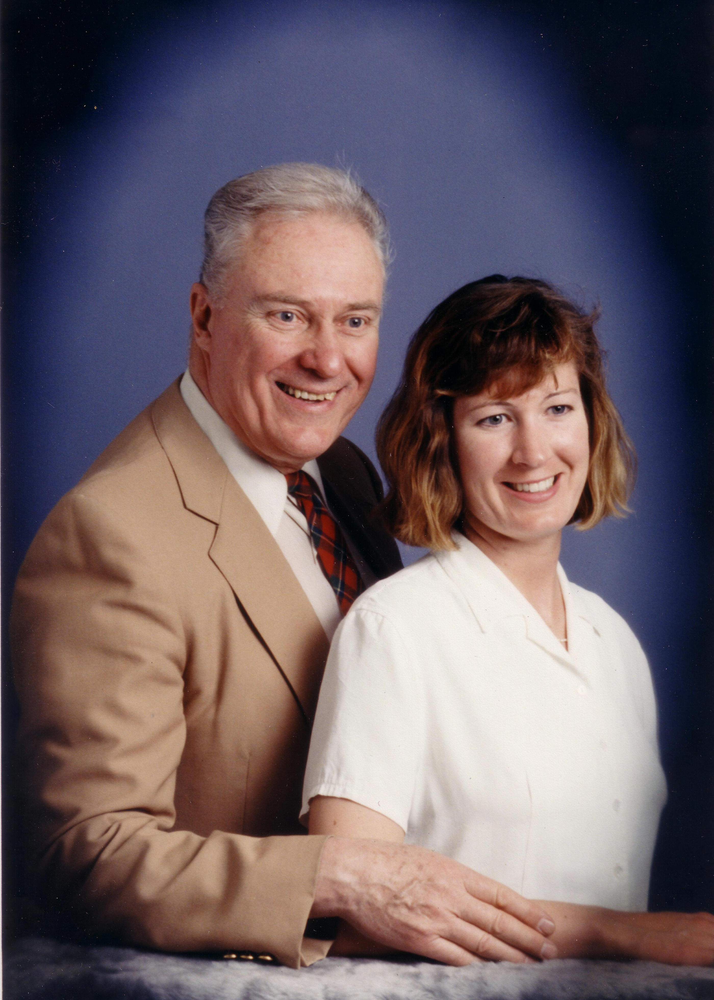
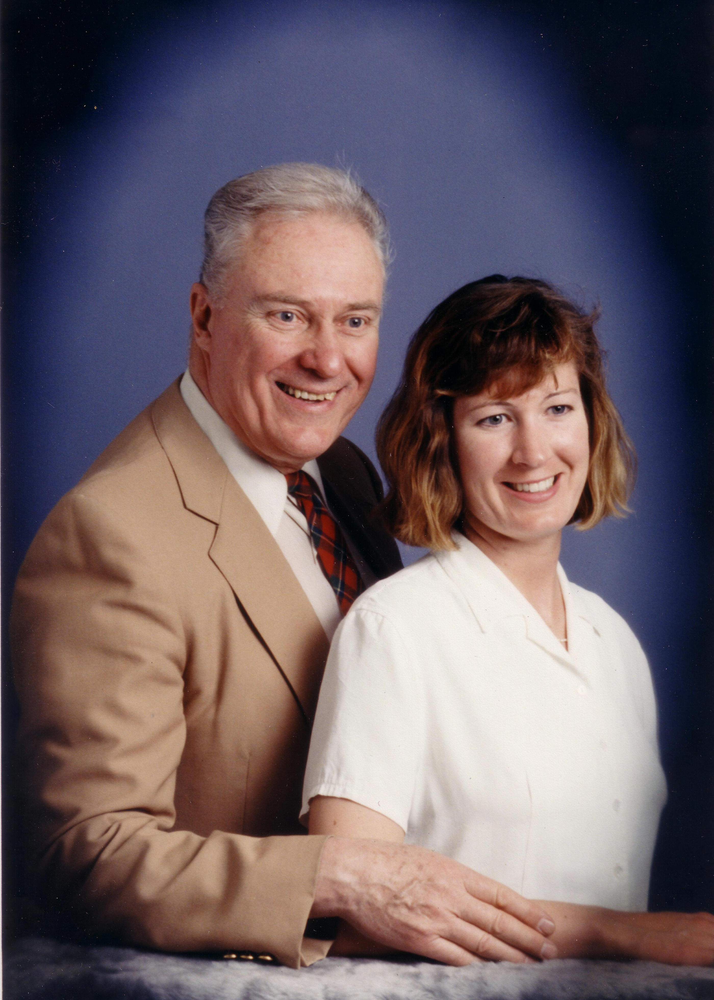

Personal Life
Dad has been my rock throughout my life, providing me the stability I needed. He always made himself available to me, going the extra mile, literally.
- When my husband and I first moved from Calgary, Canada, to Texas in 2002, there was confusion at the US border crossing with my husband’s visa paperwork. My paperwork was cleared, and they said I was free to continue on alone. I had needed to be at work in Dallas within just a few days, but was driving a big 24' UHaul full of everything we owned. I was not keen on doing that long 2000 mile drive in that beast all alone, my Dad dropped everything and came to my rescue.
- Another time I had to transition between Engineering co-op jobs immediately from Ottawa to Calgary (36 hour drive). Dad flew out to Ottawa from Edmonton just to drive my car to Calgary while I flew to my next job.
- On countless occasions, when I lived in Calgary, he would drive down from Edmonton (3 hr trip) to pick up and care for my dog when I would go on trips.
- He was always the traditional gentleman: opening the car door and every door for me, walking curbside along sidewalks, etc.
- He always made me feel important.
- From 8th grade through university, it was just Dad and me at home. He did a great job as a single Dad.
 
